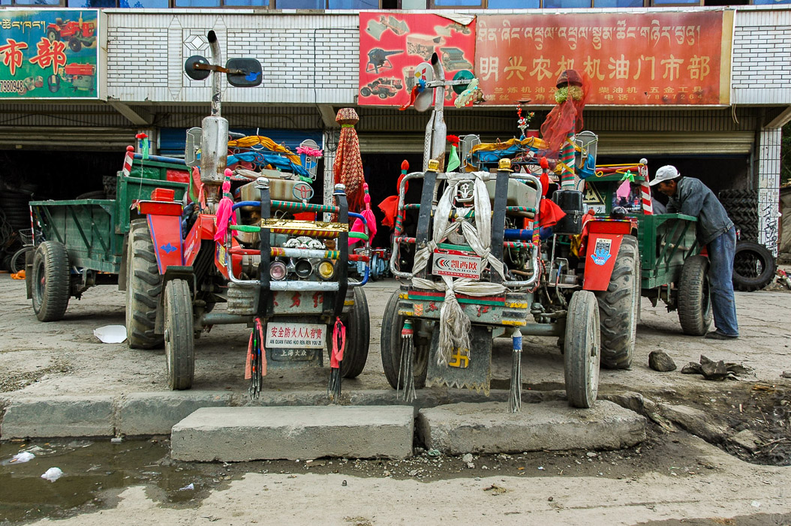
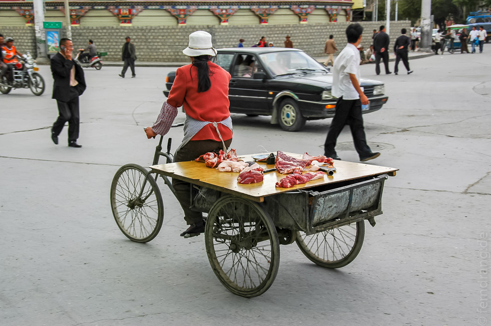
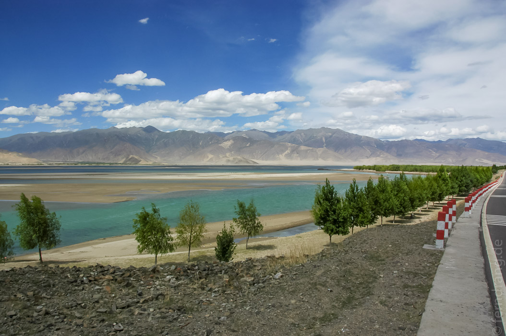
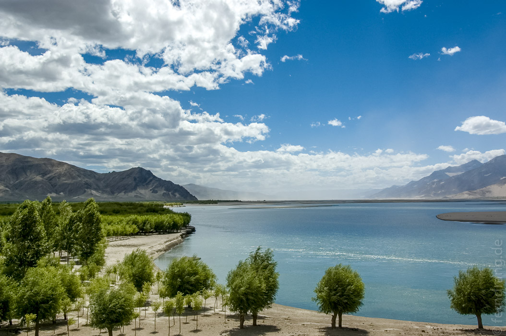

Heute stand der eigentliche Weg nach Tibet auf dem Programm. Mit einem Zwischenstopp in Xi'an hat sich die Reise sehr gezogen. Wir wurden von fünf Stunden reiner Flugzeit überrascht. Wir hätten also wieder halb zu Hause sein müssen. Stattdessen sind wir in Gangkor gelandet, wo wir mit etwas Verspätung von unserem "Reiseleiter" abgeholt wurden.
Die gute Nachricht dabei war, dass wir die Einzigen waren. Unsere Gruppengröße belief sich also auf zwei, was unsere Erwartungen deutlich untertraf. Die schlechte Nachricht war, dass unser Guide nicht nur nicht wie versprochen deutschsprachig war sondern so schlecht englisch sprach, dass wir bald versuchten Kommunikation mit ihm gänzlich zu meiden, weil es unabdingbar zu Missverständnissen führte.
Vom Flughafen sind wir das Yarlung-Tal entlang bis nach Tsetang gefahren. Der Yarlung Tsangpo wird im späteren Verlauf Brahmaputra genannt. Im hiesigen Abschnitt hat er ein sandiges Tal geschliffen, durch das er langsam mäandriert. Die umliegenden Berge sind allesamt sehr kahl und teilweise so sandig, dass sich Ecken mit Dünen bilden.
Unser Hotel in Tsedan ist noch goldener und noch kitschiger. Und es hat in seinen zwei verrückten Aufzügen geheimnisvolle Fußmatten, auf denen "Monday" stand. Leider hatte das Hotel auch Angestellte, die sich die Nacht mit Türenschlagen vertrieben, so dass uns der erste Akklimatisierungsschlaf verdorben wurde.    